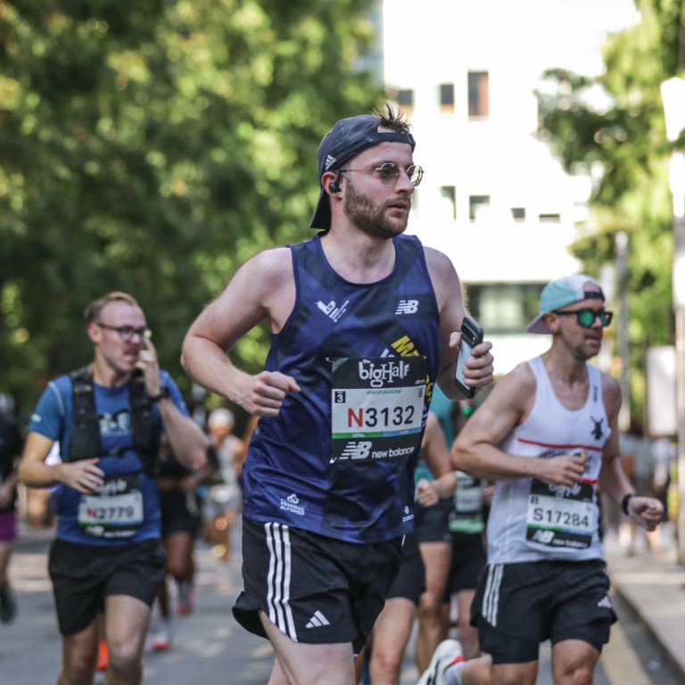
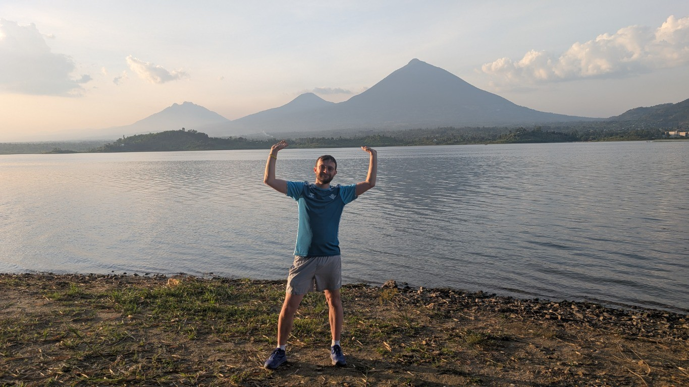

Building towards a marathon
Thoughts from the training miles, the routines, and the road to race day.
THE RUNNING JOURNAL
Marathons, ultramarathons, and everything in between. A place to share the miles, the lessons, and the adventures along the way.
Running for Mind
RUNNING FOR A REASON
I'm raising money for Mind, because mental health matters. Every donation helps support its work and keeps me moving towards the finish line.
For the latest fundraising total and target, visit my JustGiving page.
Support my fundraiser
THE RUNNING JOURNAL
Training, race days, and the adventures that happen along the way.
The running journal is just getting started. These are ideas for future posts.
Thoughts from the training miles, the routines, and the road to race day.
Lessons and adventures from exploring longer distances.
The races, the community, and the reason behind fundraising for Mind.

THE ROAD AHEAD
From marathon training to exploring new places on foot, the journey is as much a part of the story as race day.
See my challenges on JustGiving